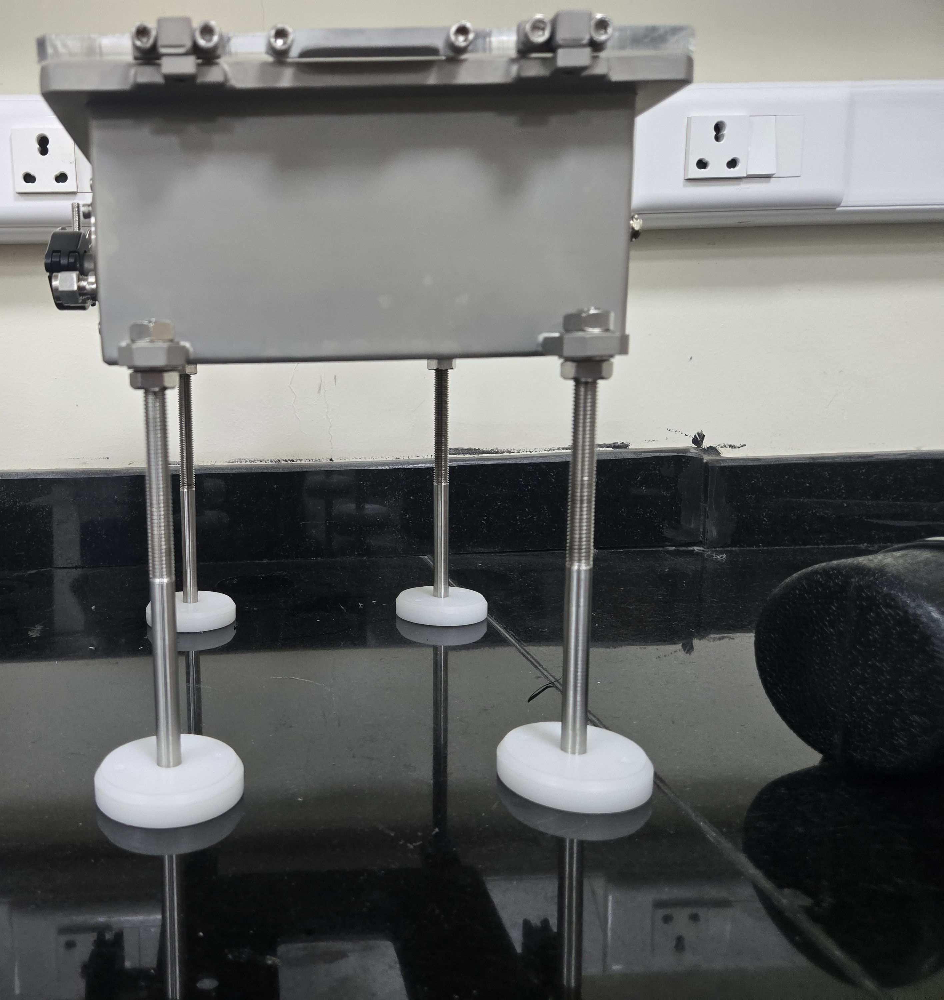
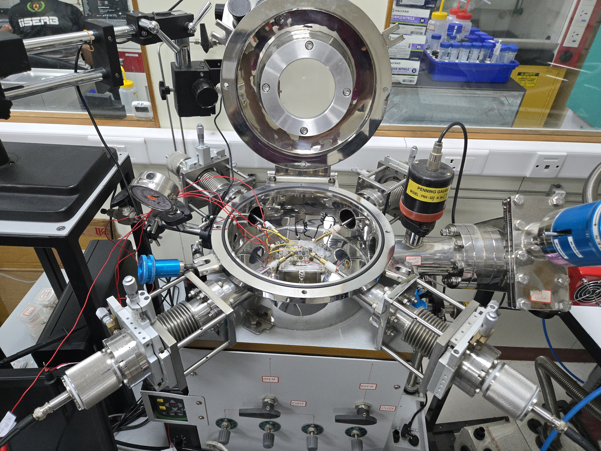
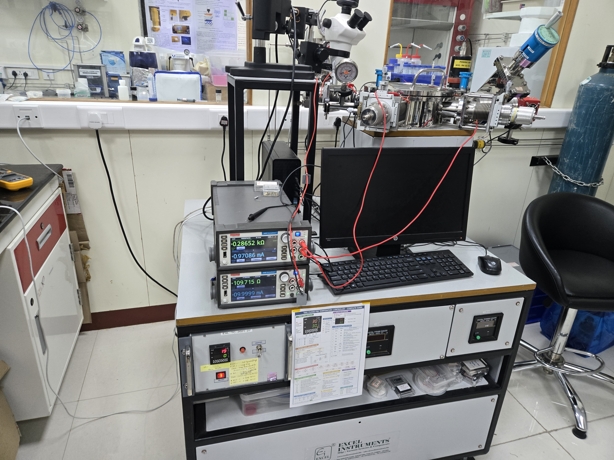
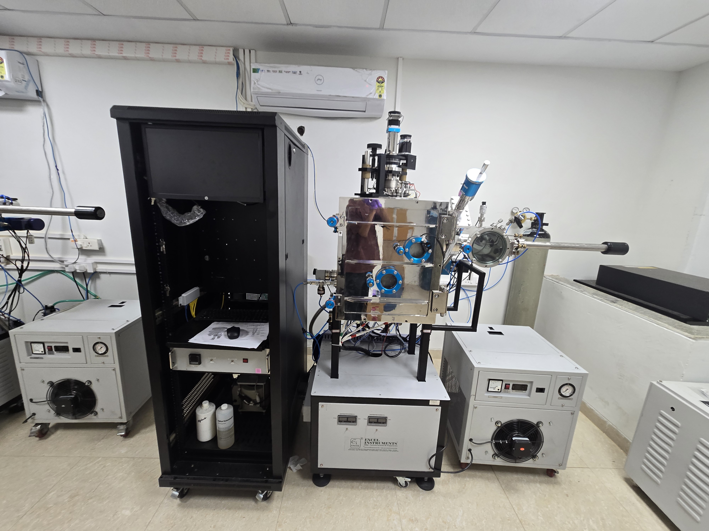

01
Semiconductor Devices
Device physics, advanced transistor structures, emerging semiconductor devices, characterization and device-oriented simulation.
Device PhysicsTCADVLSI
I am Sahil Ajay Pandey, an Engineering Sciences student at IISER Bhopal and a B.S. Electronic Systems student at IIT Madras, with hands-on research experience spanning semiconductor fabrication, device characterization, sensors, embedded electronics and FPGA systems.
ABOUT
My work sits at the intersection of semiconductor devices, electronics and experimental engineering. I enjoy moving from a physical process or device concept to a measurable, controllable hardware system.
In the SIX SENSE Laboratory at IISER Bhopal, under Dr. Santanu Talukdar, I have worked across substrate preparation, lithography, electro-lithography, laser writing, thin-film deposition, sensor fabrication and electrical characterization using a probe station and source-measure unit.
I am especially interested in semiconductor devices, nanoelectronics, sensors and MEMS, analog and mixed-signal electronics, embedded hardware, FPGA systems and emerging semiconductor technologies.
RESEARCH
A broad research profile designed to support work across device physics, fabrication, characterization and hardware implementation.
Device physics, advanced transistor structures, emerging semiconductor devices, characterization and device-oriented simulation.
Hands-on exposure to substrate preparation, lithography, electro-lithography, laser writing, deposition and sensor fabrication.
Electrical measurements, probe-station work, SMU-based characterization and experimental sensor evaluation.
Analog, digital and mixed-signal electronics, instrumentation, signal processing, embedded control and hardware prototyping.
Verilog-based digital design and Zynq-7000 development using Vivado and Vitis, including embedded software and programmable logic.
Current preparation in advanced FETs, low-power devices, emerging memories, 2D and other next-generation semiconductor concepts.
SELECTED PROJECTS
A mix of experimental research, electronic instrumentation, embedded control, signal processing and digital hardware.

Designed and developed an environmental controlled chamber through a Student Innovation Grant, combining temperature control, cooling/heating, humidity control, sensors, embedded electronics and closed-loop PID feedback.

Research work exploring V2O5-based temperature sensing and electronic measurement, connected to the broader device fabrication and characterization workflow at IISER Bhopal.

Electrical characterization of fabricated semiconductor devices using a manual probe station and SMU. I-V, R-T, and other measurements on thin-film and nano-scale samples.

Hands-on operation of thermal evaporation and deposition systems for thin-film material growth on substrates. Used for V2O5 and metal contact fabrication.
A hardware equalizer project combining frequency-selective analog processing with MATLAB-based signal analysis and spectrogram visualization.
Standalone MultiBoot embedded system using C and Verilog, combining programmable logic and software on a Zynq-7000 platform with MicroSD/FAT32 support.
RESEARCH LAB
Semiconductor device research, fabrication, and characterization at IISER Bhopal under Dr. Santanu Talukdar.
Indian Institute of Science Education and Research (IISER) Bhopal
Principal Investigator: Dr. Santanu Talukdar
EXPERIENCE
Hands-on research in micro/nanoelectronics, semiconductor devices, sensors and experimental characterization. Experience across fabrication, processing, instrumentation and electrical measurement.
Led the Student Activity Council and coordinated student activities and campus initiatives for a community of 3000+ students.
Led the planning and execution of the annual student fest, coordinating teams, operations and cross-functional responsibilities.
Leadership and team coordination in student activities at IIT Madras alongside academic and technical work.
EDUCATION
Indian Institute of Science Education and Research Bhopal
Indian Institute of Technology Madras · Online Degree Program
Electronics · Embedded · Digital SystemsJoint Entrance Examination — Advanced
Common Rank List: 6271TECHNICAL SKILLS
Use the filters to explore the areas I work with most.
LAB WORKFLOW
BEYOND THE BENCH
Student Innovation Grant recipient for the development of an environmental controlled test chamber and related sensing/control hardware.
President of the Student Activity Council at IISER Bhopal; Head of AAROHAN; Head of Department at Highers Esports, IIT Madras.
Hands-on, curious, collaborative and comfortable learning unfamiliar equipment, tools and technical workflows quickly.
English · Hindi
I am open to conversations around semiconductor research, electronics, device fabrication, experimental characterization, embedded hardware, FPGA systems, internships and thesis-oriented research.